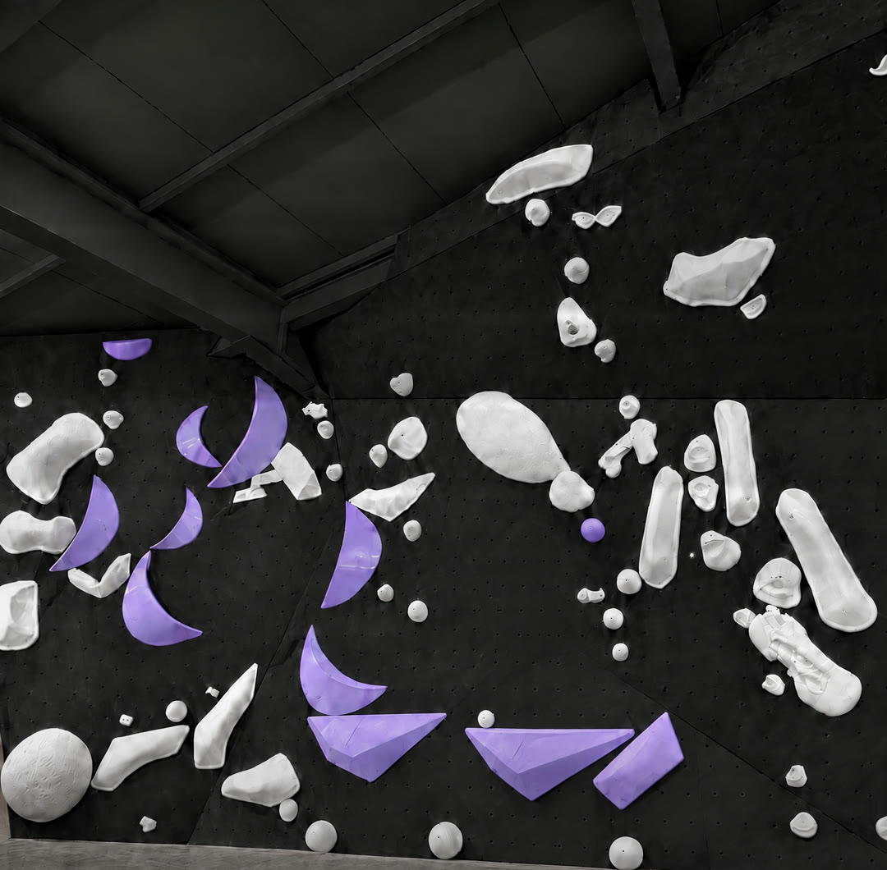

[ 알림 ]
환영합니다, 클라이머님



[ 알림 ]
[ 튜토리얼 ]
처음 한 번만 세팅하고
운동 세션을 모아
아카이브에 기록하세요
[ 스킬 ]
앱 편집 화면의 여덟 칸 그대로입니다.
[ 스킬 1 ]
남긴 부분잘라 낸 부분
전 · 후 — 가운데를 밀어 보세요
따라 하기
[ 무료 vs Pro ]
찍기 · 편집 · 기록은 무료로 다 됩니다. Pro는 광고를 없애고 꾸밈의 한도를 풉니다.
| 기능 | 무료 | Pro |
|---|---|---|
| 광고 | 있음 | 없음 |
| 엔딩 카드 | 늘 붙음 | 끄기 |
| 배속 구간 | 1개 | 무제한 |
| 내 글 | 1개 | 무제한 |
| 그림 | 1장 | 무제한 |
| 붓 색 | 기본색 | 모든 색 |
| 이어 붙이기 | — | ✓ |
| 커버 사진 | — | ✓ |
| 수평 미세조정 | — | ✓ |
| 엔딩 꾸밈 | 3가지 | 9가지 |
| 앨범 템플릿 | 1개 | 무제한 |
[ 질문 ]
찍은 영상과 기록은 내 폰 안에만 남습니다. 서버로 보내지 않아요.
완등 영상은 갤러리의 «Solo Climbing» 앨범으로 옮겨 둘 수 있어요.
설정 › 백업에서 «백업 만들기»로 묶어 두고, 새 폰에서 «백업에서 되살리기»로 옮겨요.
네. App Store에서 받을 수 있어요. 안드로이드는 Google Play에서 받아요.
광고를 한 번 보면 그 편집에서 Pro 기능을 써 볼 수 있어요.
스토어의 구독 관리에서 언제든 해지할 수 있어요.
해지해도 남은 기간까지는 Pro예요.
[ 문의 ]
남긴 글은 개발자만 볼 수 있어요.